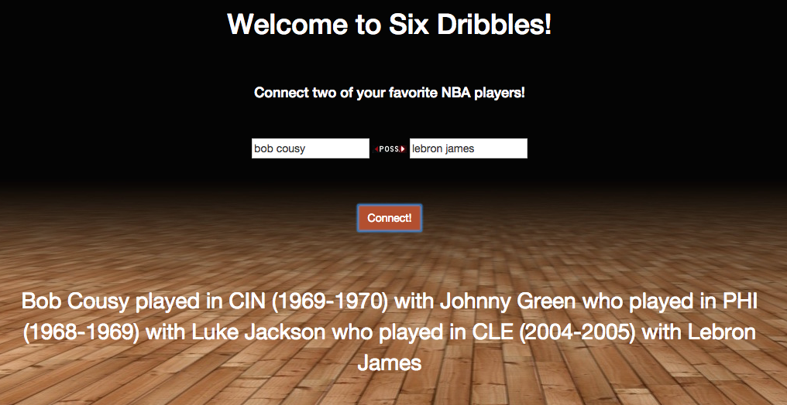
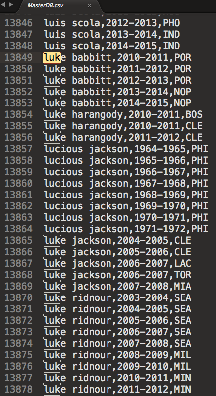
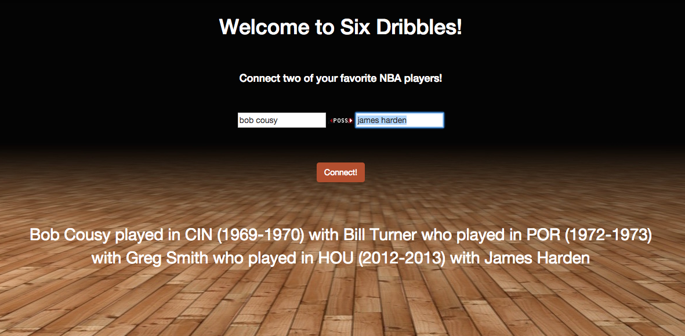
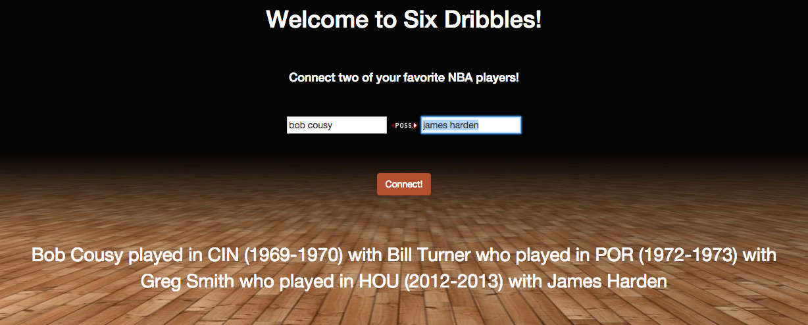
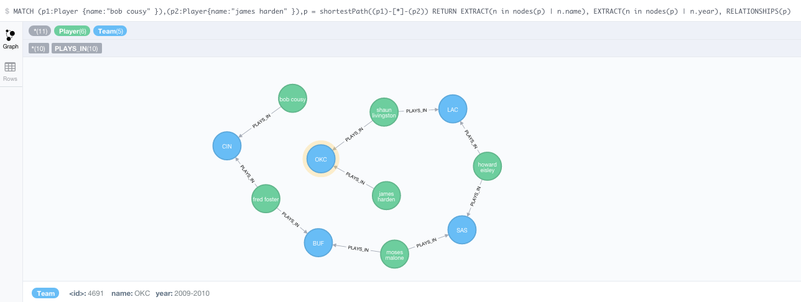
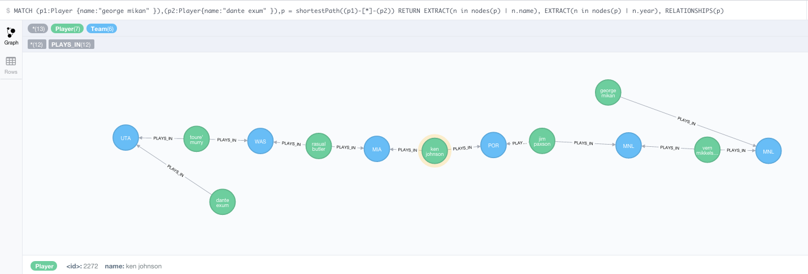

(neo4j) collision
This post is part 3 in a 4 part series. Read the other posts:
Part 1 - Try Neo4j | Part 2 - Query Neo4j | Part 3 | Part 4 - Node Neo4j | Repo | Site
Six Dribbles has been hosting and serving people with their six degrees of separation for some time, however, we have been noticing a collision problem. We have had numerous short circuits on our shortest path query and the source of this error is something I'd call "name collision". Name collision in an SQL database is unlikely because of primary keys, however, in this graph database where we merge the names to start our database we don't have this luxury. We had a few culprits, one of the most notorious was Luke Jackson.

It's pretty clear to me that Luke Jackson probably didn't play in 1969 and 2004. We probably have two people with the same name. Looking through the dataset confirms this thought. Below we have already changed the much older Luke Jackson to his full name, Lucious.

Greg Smith was another name that showed up twice and really interrupted some of our processing.

Our solution was pretty simple, I went through the data and changed each to be another name that was fitting, either a full name from one player or an initial. None of these players were names I imagined being common queries.
The next step was to remove all the data in the database at first and reload the players. I didn't do this at first, and no connections were repaired despite all my work. This was because the other nodes were still present, and duplicate nodes formed, making the database have nearly 80,000 nodes. The solution is remove all the data from the database and start over. The command to do that is here, cd into this folder:
/usr/local/Cellar/neo4j/community-x.x.x-unix/libexec/data
and use this command:
rm -rf data/*
There is also a cypher command to do this but I find this a lot faster and easier.
Then reload the data from the corrected CSV. If you go through the steps on this blog in part 1, that file has already been corrected.
The results of the correction are significant.
Here's a Bob Cousy to James Harden before the change:

After correcting the clash with Greg Smith, the query went from being a 4 node relationship to a 6 node relationship.

Just for good measure, here's the longest shortest path query I've found yet. It's between George Mikan, one of the oldest players in the game and Dante Exum, one of the youngest.

I'll be back soon to discuss adding a new node and relationship to the database: NBA Coaches!